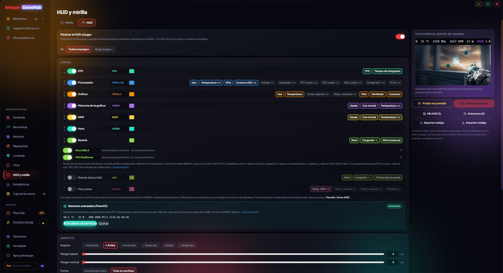

El que necessites, a sobre del joc
Un HUD amb els teus FPS, temperatures i consum, i una mira feta a mida. Sense entrar dins del joc: cap problema amb els anticheats.
HUD: les teves dades mentre jugues
FPS, CPU, GPU, memòria i hora en un racó del joc, com tu vulguis.
Cada línia és un grup (FPS, GPU, CPU, memòria gràfica, RAM i hora) amb la seva etiqueta i color, i tries quines dades mostra cadascun. Els ordenes com vulguis i els desactives per separat.
Tries el racó, el marge, una línia per element o tot en una sola línia, la mida i el tipus de lletra, la negreta, els colors, el fons, el contorn del text per poder-lo llegir sense fons i amb quina freqüència s'actualitza (de 0,25 a 2 segons).
També pot mostrar la bateria dels teus dispositius sense fils, una línia per dispositiu (⚡ mentre es carrega, en vermell quan està baixa): comandaments de PlayStation, Xbox, Switch i 8BitDo; auriculars de Corsair, Razer, SteelSeries, HyperX i Logitech; ratolins i teclats de Logitech, i el que tinguis per Bluetooth.
Mentre l'edites, veus una vista prèvia amb les dades reals del teu PC en aquell moment. Només llegeix dades mentre és visible: amb el HUD amagat no consumeix res.
El HUD també pot anar a baix al centre, té una línia amb la bateria del teu portàtil (i si es carrega) i la línia de la memòria gràfica pot mostrar-ne la temperatura. Llegeix la bateria de cada vegada més dispositius, com els auriculars Razer BlackShark V3 Pro o els ratolins VXE, ATK i Pulsar amb receptor.
Si fas streaming amb Discord, OBS o Streamlabs, el HUD mostra els FPS del teu joc i no els de la seva vista prèvia, i si el seu fitxer es fa malbé ja no perds els HUD i les mires que has desat.
El HUD mostra els FPS del joc que tens obert encara que no sigui al davant, pot quedar-se a la pantalla en tot moment (també a l'escriptori) i, amb diverses pantalles, tries quina.
Com es fa servir
- Eines → HUD i mira → HUD.
- «Prova-ho a la pantalla» el mostra a l'instant, per sobre de tot.
- Surt sol quan jugues; Ctrl+Alt+H l'amaga i el torna a mostrar.

Què mostra
Windows dona el bàsic; les temperatures i el consum vénen del teu programa de sensors.
Sense instal·lar res (les mateixes dades que fa servir el Gestor de tasques): FPS i temps de fotograma, ús de la CPU i MHz reals, ús de la GPU, MHz, temperatura i ventilador, memòria gràfica i RAM utilitzada (amb el total, si vols).
Amb un programa de sensors obert: temperatura i consum de la CPU, temperatura de la RAM, punt calent i temperatura de memòria de la GPU, i el seu consum en watts (a AMD, el TBP, el de tota la placa). Windows no dona aquestes dades sense un controlador especial: GameHub les llegeix del programa que ja fas servir. A la baixada directa també pots activar «Sensors avançats» (opcional, amb un permís de Windows) per obtenir-les sense obrir un altre programa; a la versió de Microsoft Store, fes servir el programa de sensors.
Si en tens diversos oberts, cada valor ve del primer que el té, i si un es tanca, continua amb el següent sense que ho notis. A l'editor, passar el cursor per sobre d'un valor mostra de quin programa ve. Si no n'hi ha cap, aquests valors surten com a «—» (o s'amaguen, si ho tries).
Com es fa servir
- HWiNFO: marca «Shared Memory Support» a la seva Configuració (a la versió gratuïta s'apaga cada 12 hores).
- LibreHardwareMonitor: Options → Remote Web Server → Run.
- MSI Afterburner: només cal tenir-lo obert (amb RTSS, també dona FPS).
No funcionen
- HWMonitor: no comparteix les seves dades amb altres programes.
Una mira feta a mida
Centrada per defecte i ajustable a la dècima de píxel.
Amb el seu editor tries la forma (creu, T, punt o cercle), gruix, longitud, buit, radi, punt central, color, opacitat i contorn amb el seu color. La veus en una vista prèvia ampliada, on cada quadrat és un píxel, i una altra a mida real.
Surt al centre exacte de la pantalla i la pots moure píxel a píxel, o en passos de 0,1 píxels: amb decimals es reparteix entre dos píxels, com feien els jocs clàssics, per caure al punt exacte (una mica menys nítida, perquè la pantalla no té mig píxels).
Molta gent en fa servir una en partides normals, però en torneigs i en algunes partides competitives les mires externes poden estar prohibides: consulta les normes del que jugues.
Com es fa servir
- Eines → HUD i mira → Mira.
- Fletxes a la pantalla o del teclat per moure-la (Maj: 10 px).
- Surt sola quan jugues; Ctrl+Alt+X l'amaga i la torna a mostrar.

Vigilant del connector de la targeta gràfica
T'avisa abans que el connector de 16 pins de la teva targeta gràfica es cremi.
Algunes targetes gràfiques amb connector de 16 pins (12VHPWR / 12V-2x6) han tingut connectors cremats per un mal contacte. Mentre jugues, GameHub vigila el que la teva targeta gràfica exposa a través de HWiNFO i, si alguna cosa estranya dura uns segons (no un sol pic), t'avisa amb una notificació de Windows i una línia vermella a sobre del joc.
- ASUS ROG Astral i ROG Matrix (RTX 4090, 5080, 5090): corrent a cada pin. Avisa si un està sobrecarregat o si un no porta res mentre els altres sí (sense contacte).
- Altres targetes NVIDIA RTX 40 i 50 amb 16 pins: tensió del connector. Si baixa durant un temps sostingut, hi ha mal contacte o el cable s'està desgastant.
- Altres targetes (com la Sapphire NITRO+ RX 9070 XT PhantomLink): a punt per quan HWiNFO pugui llegir els sensors del seu connector.
No apaga el teu PC ni tanca el teu joc: t'explica què passa i què has de fer (desar, tancar el joc i comprovar que el cable està ben endollat del tot i sense corbes tancades prop del connector).
Com es fa servir
- Funciona sol amb HWiNFO obert (compartint les seves dades).
- Les targetes gràfiques amb connectors de 8 pins no ho necessiten.
Desa, restaura i comparteix
Els teus HUD i mires, tal com els vas deixar.
Desa el teu HUD o la teva mira amb un nom («Competitiu», «Valorant verd»…) i torna-hi quan vulguis. Cada vegada que en deses un de diferent, l'anterior es queda a «Anteriors» (els últims 20), per si de cas: els pots veure, recuperar o esborrar.
Tria si surten a tots els teus jocs o només als que triïs: no tots els jocs són de trets. I comparteix-los amb un codi (ARLQ-MIRA-… o ARLQ-HUD-…) perquè un amic els pugui provar: crear el codi forma part d'ArlequinPro, i carregar-lo és gratuït per a tothom.
Com es fa servir
- «Les meves mires» / «Els meus HUD» i «Anteriors» a l'editor.
- «Exporta codi» (ArlequinPro) i «Importa codi» (gratuït).
- «Importa codi» també accepta codis de mira de CS2 i VALORANT, porta la de CS2 des del teu PC, i «Prova a AimHub» la mostra sobre diversos fons.
- «Copia per a CS2 o VALORANT» (ArlequinPro) copia la teva mira perquè la importis al joc.
Vols provar-lo?
⬇ Baixada directa 🛍️ Baixa'l de Microsoft StoreWindows 10 i 11 (64 bits) · Gratuït · S'actualitza sol